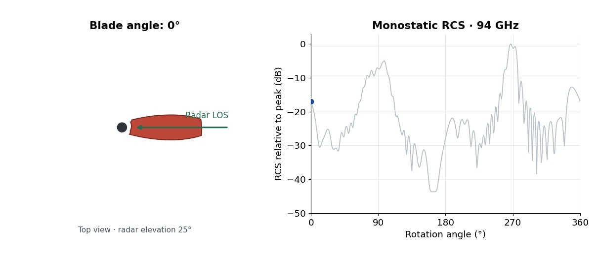
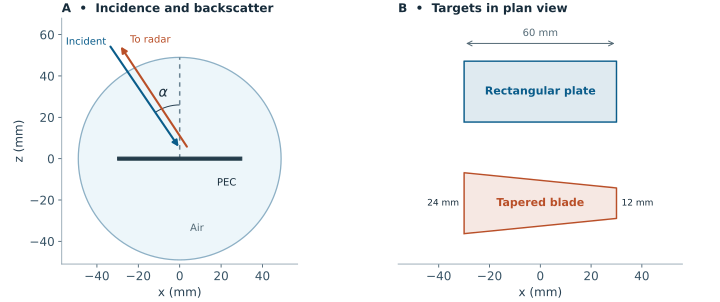
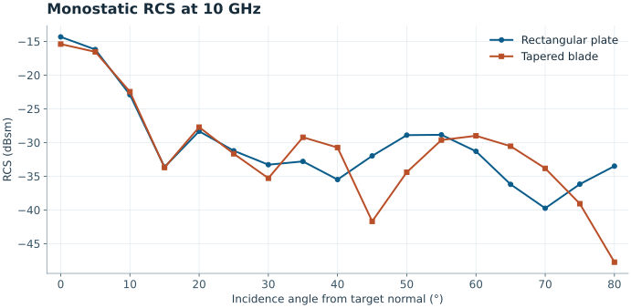
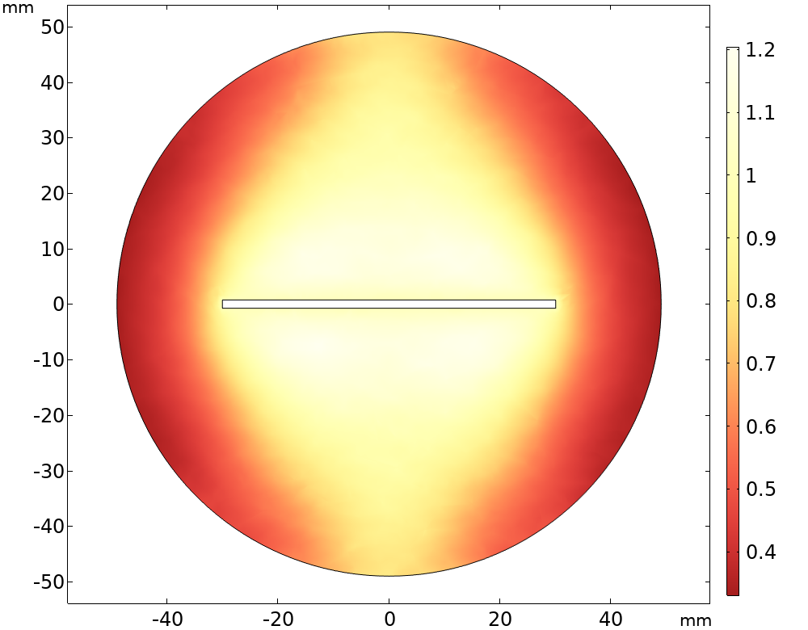
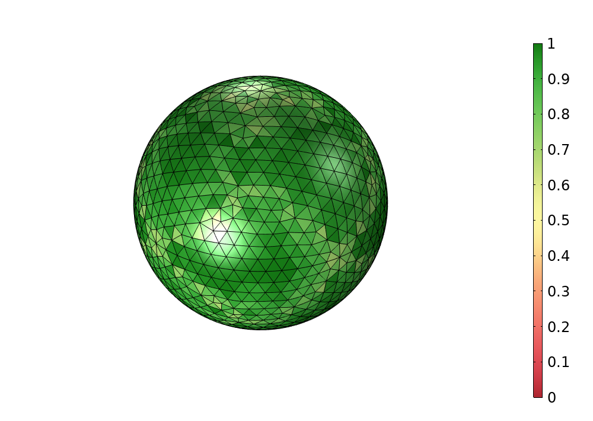
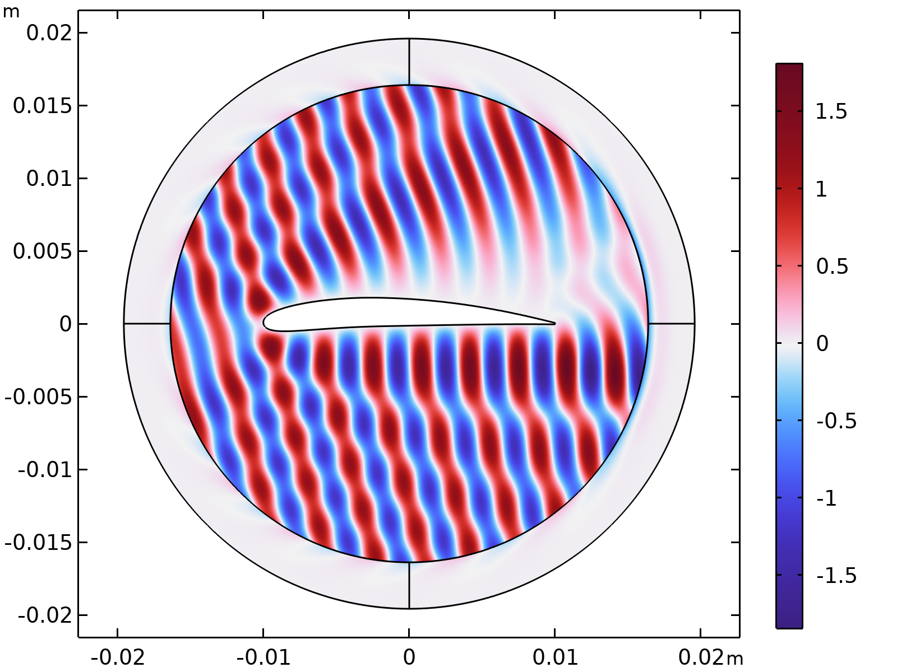
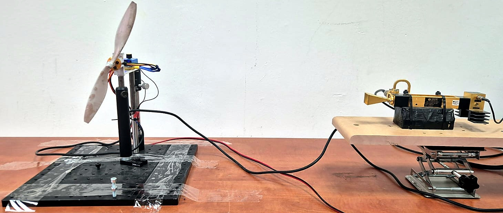

חישוב שטח חתך מכ״ם של להב רחפן ב־COMSOL
בתרגיל מחשבים את שטח חתך המכ״ם (RCS) של לוח מתכת ושל דגם פשוט של להב רחפן בתדר 10 GHz. משנים את זווית הפגיעה ובודקים כמה חזק ההד בכיוון שממנו הגיע הגל.

שטח חתך מכ״ם מונוסטטי
שטח חתך המכ״ם הוא מדד לעוצמת ההד מהמטרה בכיוון המקלט, ביחס לגל הפוגע. ערכו נתון במטרים רבועים ויכול להיות גדול או קטן בהרבה משטחה הפיזי של המטרה. כשהמשדר והמקלט נמצאים באותו מקום, מחשבים RCS מונוסטטי לפי השדה המפוזר בכיוון ההפוך להתקדמות הגל הפוגע.
נציג את התוצאות ב־dBsm, דציבלים ביחס למטר רבוע אחד: 0 dBsm = 1 m², ואילו −20 dBsm = 0.01 m². הזווית α נמדדת מהניצב למשטח: 0° הוא מבט ישר על הפאה הרחבה.
לעבודה עם המודלים נדרשים COMSOL Multiphysics 6.4 ו־RF Module. הגדרת הפרמטרים, הגאומטריה והרשת מוסברת גם במדריך המבוא ל־COMSOL.
הקמת המודל ב־COMSOL

-
גאומטריית המטרה ותחום האוויר
ב־Model Wizard בוחרים 3D, ממשק Electromagnetic Waves, Frequency Domain (emw) ומחקר Frequency Domain. ב־Geometry בוחרים מילימטרים ויוצרים כדור ברדיוס 49 mm ולוח ממורכז במידות 60 × 24 × 1.5 mm. אורך הלוח בכיוון x והעובי בכיוון z.
ב־Difference מחסירים את הלוח מהכדור ומשאירים תחום אוויר אחד. מגדירים את המקדם הדיאלקטרי היחסי ואת החדירות המגנטית היחסית ל־1, ואת המוליכות החשמלית לאפס. על הפאות שנחשפו בחיסור הלוח מחילים Perfect Electric Conductor (PEC). בתרגיל הלהב מחליפים את הלוח בטרפז באותו אורך ועובי, שרוחבו מצטמצם מ־24 ל־12 מ״מ. משרטטים את הטרפז ב־Work Plane בגובה z = −0.75 mm ומוסיפים לו עובי של 1.5 mm באמצעות Extrude. אלה קודקודי הטרפז במ״מ, לפי סדר ההקפה.
(-30, -12), (30, -6), (30, 6), (-30, 12) -
הגל הפוגע
מגדירים את הפרמטרים f0 = 10[GHz], E0 = 1[V/m] ו־alpha = 0[deg]. בהגדרות הממשק emw בוחרים Scattered field ומציבים את וקטור שדה הרקע הבא. הקיטוב בכיוון y, והגל מתקדם במישור xz. בזווית אפס הגל מתקדם לאורך −z.
Ebx = 0 Eby = E0*exp(-j*emw.k0*(x*sin(alpha)-z*cos(alpha))) Ebz = 0 -
תנאי שפה וחישוב השדה הרחוק
על המעטפת החיצונית של הכדור מוסיפים Scattering Boundary Condition מסדר שני, ללא גל פוגע נוסף בגבול. תחת Far-Field Domain בוחרים את האוויר, וב־Far-Field Calculation בוחרים את המעטפת החיצונית בלבד. כך מחשבים את השדה הרחוק מן השדה המפוזר.
-
רשת וסריקת זוויות
מגדירים lambda0 = c_const/f0 ובונים רשת Free Tetrahedral. ברשת הבסיס גודל האלמנט המרבי הוא lambda0/5 באוויר ו־lambda0/8 על המטרה. במחקר מזינים את f0 כתדר. מריצים פעם ראשונה ב־0° ובודקים שהפתרון מציג שדה מפוזר סביב הלוח.
לאחר מכן משנים את alpha ומחשבים שוב בכל זווית. אפשר לחזור על הפעולה ידנית למספר זוויות או להוסיף Parametric Sweep עם range(0,5,80) ויחידת deg. הגאומטריה נשארת קבועה; כיוון הגל משתנה.
-
חישוב RCS מהשדה הרחוק
תחת Results → Derived Values → Global Evaluation משתמשים בכיוון החזרה u = (−sin(α), 0, cos(α)). מחברים את ריבועי הגדלים של שלושת רכיבי השדה הרחוק, מכפילים ב־4π ומחלקים בריבוע משרעת הגל הפוגע. הביטוי הראשון מחזיר ערך במטרים רבועים; לגרף משתמשים בביטוי השני.
4*pi*(abs(Efarx(-sin(alpha),0,cos(alpha)))^2 +abs(Efary(-sin(alpha),0,cos(alpha)))^2 +abs(Efarz(-sin(alpha),0,cos(alpha)))^2)/E0^210*log10(sigma/1[m^2])כאן sigma מסמן את הביטוי הראשון. מזינים אותו במלואו במקום sigma בתוך הלוגריתם, או מגדירים אותו כמשתנה. בקבצים המצורפים שני הביטויים כבר מופיעים תחת Monostatic RCS.
תוצאות הסריקה ב־10 GHz
בכל זווית פתרנו את שני המודלים באותו תדר ובאותו קיטוב. בפגיעה ניצבת מתקבלים −14.3 dBsm ללוח ו־−15.4 dBsm ללהב. ב־15° ההחזר מהלוח נמוך בכ־19 dB מערכו בפגיעה ניצבת.

| זווית מהניצב | לוח מלבני (dBsm) | להב טרפזי (dBsm) |
|---|---|---|
| 0° | −14.3 | −15.4 |
| 10° | −22.9 | −22.5 |
| 15° | −33.6 | −33.7 |
| 30° | −33.3 | −35.3 |
| 60° | −31.3 | −29.0 |
אחרי השפל ב־15° ההד מתחזק שוב ב־20°. בזווית אחרת משתנים הפרשי המופע בין חלקי המשטח, ולכן גלים שחזרו מהם יכולים לחזק זה את זה או להתבטל חלקית.
השדה המפוזר ורשת החישוב


רגישות לרשת ולגודל תחום האוויר
הרצנו שוב את שני המודלים ב־0°, 10°, 30°, 60°. כשהקטנו את גודל האלמנט המרבי בכ־20%, השינוי הגדול ביותר היה 0.11 dB. כשהגדלנו את רדיוס תחום האוויר מ־49 ל־59 מ״מ, באותן הגדרות רשת בסיס, השינוי הגדול ביותר היה 0.53 dB. הבדיקה נותנת סדר גודל לרגישות בזוויות שנבדקו. סמוך לשפל בגרף כדאי לבדוק זוויות צפופות יותר ולחזור על בדיקת הרשת.
הלוח והלהב בתרגיל הם מוליכים מושלמים, ללא מבנה פנימי או חומרים מרוכבים. התוצאות מיועדות ללימוד ולהשוואה בין המודלים. כדי להעריך להב אמיתי צריך להגדיר גם את צורתו, תכונות החומר ותנאי המדידה.
תרגיל להמשך: חשבו שוב ב־10°, הפעם עם קיטוב במישור הפגיעה: הכפילו את גורם המופע ב־E0*(cos(alpha),0,sin(alpha)). בדקו אם ההחזר משתנה גם כשהזווית נשארת קבועה.
להב מסתובב ב־94 GHz
באנימציה שבראש הדף, להב יחיד מסתובב סיבוב שלם סביב ציר הרוטור והמכ״ם נמצא בזווית הגבהה של 25° מעל מישור הסיבוב. החישוב ב־94 GHz משתמש באופטיקה פיזיקלית על משטח מוליך אידאלי: התרומות מהפאות הפונות למכ״ם מצטרפות לפי המופע שלהן. בחלק מהזוויות הן מחזקות זו את זו ומתקבל הד חזק; בזוויות אחרות הן מבטלות זו את זו חלקית.
בתרגיל ה־COMSOL הזווית נמדדת מהניצב לפאה; באנימציה היא מתארת סיבוב סביב הציר. בציר האנכי של האנימציה 0 dB הוא שיא הסריקה; קובץ ה־CSV מציג ערכים מוחלטים ב־dBsm. גם התדר והגאומטריה שונים, ולכן לא מצפים שהשיאים בשני הגרפים יופיעו באותן זוויות. ההדגמה מחשבת את עוצמת ההחזרה, ואינה ספקטרוגרמה של מיקרו־דופלר.
בסריקה הזו שיא ההחזרה היה −34.7 dBsm בזווית סיבוב של 274°.
השדה החשמלי סביב חתך להב ב־COMSOL
באיור גל מישורי בתדר 94 GHz פוגע בחתך הלהב, שמופיע בלבן במרכז. הצבעים מציינים את החלק הממשי של רכיב השדה החשמלי Ez, והטבעת החיצונית היא שכבה בולעת (PML).


מודל חתך דו־ממדי נותן רוחב פיזור, שנמדד ביחידות אורך. בתרגיל התלת־ממדי שלמעלה מחשבים את שטח חתך המכ״ם, שנמדד ביחידות שטח.
קבצים להורדה
שני המודלים נפתחים ב־COMSOL 6.4 עם RF Module. בכל אחד שמור הפתרון ב־0°. כדי לחשב זווית אחרת, שנו את alpha והריצו שוב.
- מודל הלוח המלבני MPH
פתרון עם חתך שדה, תצוגת רשת וביטויים לחישוב RCS.
- מודל הלהב הטרפזי MPH
להב טרפזי עם אותן הגדרות עירור כמו במודל הלוח.
- תוצאות הסריקה ב־10 GHz CSV
זווית הפגיעה, מספר האלמנטים ושטח חתך המכ״ם. העמודה
caseמסמנת רשת בסיס (base), רשת צפופה (fine) או תחום אוויר גדול יותר (larger). - נתוני הלהב המסתובב ב־94 GHz CSV
סיבוב מלא בדגימה של מעלה אחת, כשהמכ״ם נמצא 25° מעל מישור הסיבוב.
מקורות וקריאה נוספת
- Radar Cross Section of a Perfectly Conducting Sphere · דוגמת ייחוס בתיעוד COMSOL.
- Radar Cross Section · סריקת זווית במודל דו־ממדי ב־COMSOL.
- מדריך לאנטנת שופר ב־COMSOL · הזנה דרך גלבו וחישוב עקום קרינה.
- מכ״ם גלים מילימטריים · מחקר ויישומים במכ״ם ובמיקרו־דופלר.